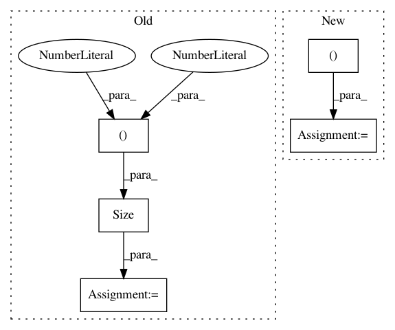

979b8c9efa551e8c948a4aca145367a2d87ac8d6,test/distributions/test_multivariate_normal.py,TestMultivariateNormal,test_multivariate_normal_correlated_samples,#TestMultivariateNormal#Any#,187
Before Change
covmat = torch.diag(torch.tensor([1, 0.75, 1.5], device=device))
mvn = MultivariateNormal(mean=mean, covariance_matrix=NonLazyTensor(covmat))
base_samples = mvn.get_base_samples(torch.Size((3, 4)))
self.assertTrue(mvn.sample(base_samples=base_samples).shape == torch.Size([3, 4, 3]))
base_samples = mvn.get_base_samples()
self.assertTrue(mvn.sample(base_samples=base_samples).shape == torch.Size([3]))
After Change
def test_multivariate_normal_correlated_samples(self, cuda=False):
device = torch.device("cuda") if cuda else torch.device("cpu")
for dtype in (torch.float, torch.double):
mean = torch.tensor([0, 1, 2], device=device, dtype=dtype)
covmat = torch.diag(torch.tensor([1, 0.75, 1.5], device=device, dtype=dtype))
mvn = MultivariateNormal(mean=mean, covariance_matrix=NonLazyTensor(covmat))
base_samples = mvn.get_base_samples(torch.Size([3, 4]))
self.assertTrue(mvn.sample(base_samples=base_samples).shape == torch.Size([3, 4, 3]))
base_samples = mvn.get_base_samples()
self.assertTrue(mvn.sample(base_samples=base_samples).shape == torch.Size([3]))
def test_multivariate_normal_correlated_samples_cuda(self):
if torch.cuda.is_available():
with least_used_cuda_device():
self.test_multivariate_normal_correlated_samples(cuda=True)
In pattern: SUPERPATTERN
Frequency: 4
Non-data size: 5
Instances
Project Name: cornellius-gp/gpytorch
Commit Name: 979b8c9efa551e8c948a4aca145367a2d87ac8d6
Time: 2019-02-26
Author: balandat@fb.com
File Name: test/distributions/test_multivariate_normal.py
Class Name: TestMultivariateNormal
Method Name: test_multivariate_normal_correlated_samples
Project Name: edouardoyallon/pyscatwave
Commit Name: 42516d99363ea28ffdb9166c339a03dc08f0cfa3
Time: 2017-03-28
Author: zagoruyko2@gmail.com
File Name: scatwave/scattering.py
Class Name: Scattering
Method Name: __init__
Project Name: cornellius-gp/gpytorch
Commit Name: 979b8c9efa551e8c948a4aca145367a2d87ac8d6
Time: 2019-02-26
Author: balandat@fb.com
File Name: test/distributions/test_multitask_multivariate_normal.py
Class Name: TestMultiTaskMultivariateNormal
Method Name: test_multivariate_normal_correlated_sampels
Project Name: kymatio/kymatio
Commit Name: cf49678b0b8dcfc550f25e02c76d82d358d9f812
Time: 2018-11-21
Author: zagoruyko2@gmail.com
File Name: scatwave/scattering.py
Class Name: Scattering
Method Name: __init__